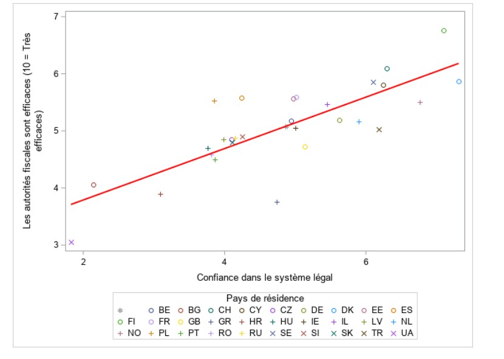

Thesis on descriptive statistics on taxation in France
Presentation of the project
This thesis corresponds to descriptive statistics established using the ESS survey and SAS language in order to examine which taxation system best suits which society. It will first study the relationship between trust in institutions and support for a given tax policy. It will then show that this support also depends on more concrete variables such as age, income, or education level. Finally, we will compare tax preferences to determine, without going as far as ideals, the strong values that govern societies. In other words, tax norms are always based on social values that need to be updated.
Presentation of the report
In this part, you can display the report and read it without downloading it.
Show the report
Presentation of the code
This part will allow you to navigate through the SAS code made in order to have the plots in the thesis. The code is separated in three parts (Import the data, Structure the data, Use the data), each one with multiple subparts.
Part 1: Import the ESS data
Import the data with the chosen variables
Création de la libraire où se situe la base de données
libname ess "W:\Telechargements";Importation de la base de données avec les variables retenues
data ess;
set ess.ess;
keep
cntry /*Country*/
gincdif /*Government should reduce differences in income levels (opinion)*/
agea /*Age of respondent, calculated*/
hinctnta /*Household's total net income, all sources*/
smdfslv /*For fair society, differences in standard of living should be small*/
sblazy /*Social benefits/services make people lazy*/
sblwcoa /*Social benefits/services make people less willing care for one another*/
sblwlka /*Social benefits/services make people less willing look after themselves/family*/
txautef /*Tax authorities, how efficient in doing their job*/
ditxssp /*Government decrease/increase taxes and social spending*/
txearn /*Taxation for higher versus lower earners*/
earnpen /*Higher or lower earners should get larger old age pensions*/
earnueb /*Higher or lower earners should get larger unemployment benefits*/
lbenent /*Many with very low incomes get less benefit than legally entitled to*/
insfben /*Insufficient benefits in country to help people in real need*/
trstprl /*Trust in country's parliament*/
edulvla /*Highest level of education*/
trstlgl /*Trust in the legal system*/
trstplt /*Trust in politicians*/
trstprt /*Trust in political parties*/
imprich /*Important to be rich, have money and expensive things*/
ipeqopt /*Important that people are treated equally and have equal opportunities*/
impfree /*Important to make own decisions and be free*/
iphlppl /*Important to help people and care for others well-being*/
gvjbevn /*Job for everyone, governments' responsibility*/
gvhlthc /*Health care for the sick, governments' responsibility*/
gvslvol /*Standard of living for the old, governments' responsibility*/
gvslvue /*Standard of living for the unemployed, governments' responsibility*/
gvcldcr /*Child care services for working parents, governments' responsibility*/
gvpdlwk /*Paid leave from work to care for sick family, governments' responsibility*/;
RUN;Part 2: Setup of the variables
Add labels to the variables
Renommage des variables avec des labels
data ess_label;
set ess;
label
cntry = "Pays de résidence"
agea = "Age"
gincdif = "Le gouvernement doit prendre des mesures pour réduire les inégalités de revenu (1 = D'accord et 5 = Pas d'accord)"
hinctnta = "Revenu"
smdfslv = "Pour une société juste, les différences de niveau de vie doivent être faibles (1 = D'accord et 5 = Pas d'accord)"
sblazy = "Les prestations sociales et les services sociaux rendent les personnes paresseuses (1 = Totalement d'accord et 5 = Totalement pas d'accord)"
sblwcoa = "Les prestations sociales et les services sociaux conduisent les personnes à moins prendre soin des autres (1 = Totalement d'accord et 5 = Totalement pas d'accord)"
sblwlka = "Les prestations sociales et les services sociaux conduisent les personnes à moins prendre soin de leurs proches (1 = Totalement d'accord et 5 = Totalement pas d'accord)"
txautef = "Les autorités fiscales sont efficaces (10 = Très efficaces)"
ditxssp = "Il faut augmenter les impôts et les prestations sociales "
txearn = "Impots proportionnels (1), progressifs (2) ou égal (3) ?"
earnpen = "Retraite en fonction du salaire (1 = Riche retraite plus élevée, 2 = Retraite égale et 3 = Riche retraite moins élevée"
earnueb = "Les hauts salaires doivent-ils avoir une aide au chômage plus élevée (1), égale (2) ou moins élevée (3) ?"
lbenent = "Beaucoup de personnes à très faible revenu perçoivent moins d'aides que ce dont ils ont accès"
trstprl = "Avez-vous confiance dans votre parlement ? (0 = Pas confiance et 10 = Confiance)"
edulvla = "Niveau éducation maximal"
trstlgl = "Confiance dans le système légal"
trstplt = "Confiance dans les politiciens"
trstprt = "Confiance dans les partis politiques"
imprich = "Importance d'être riche (1=Oui et 6=Non)"
ipeqopt = "Importance d'être égaux (1=Oui et 6=Non)"
impfree = "Importance d'être libre (1=Oui et 6=Non)"
iphlppl = "Importance d'aider les autres (1=Oui et 6=Non)"
gvjbevn = "Responsabilité du gouvernement pour les emplois pour tous"
gvhlthc = "Resp du gouv pour le système de santé"
gvslvol = "Resp du gouv pour le niveau de vie des personnes âgées"
gvslvue = "Resp du gouv pour le niveau de vie des chômeurs"
gvcldcr = "Resp du gouv pour le soin aux enfants de travailleurs"
gvpdlwk = "Resp du gouv jour off payé afin de prendre soin famille malade";
RUN;Add formats to the variables
Création de formats
PROC FORMAT;
value income
1-5 = "Classe populaire et moyenne inférieure"
6-8 = "Classe moyenne"
9-10 = "Classe supérieure"
77 = "A refusé de répondre"
88 = "Ne sais pas"
99 = "Pas de réponse";
run;
PROC FORMAT;
value age
0-<15 = "Enfant ou adolescent"
15-<30 = "Moins de 30 ans"
30-65 = "Entre 30 et 65 ans"
65-500 = "Plus de 65 ans"
999 = "Pas de réponse";
RUN;
PROC FORMAT;
value $country
"DK","SE","NO","FI" = "Modèle Social-Démocrate"
"FR","BE","LU","DE","AT" = "Modèle Conservateur/Corporatiste"
"GB","CY","IE"="Modèle Libéral"
"AL","HR","ME","MK","SI","XK","SK","CH","NL","GE","IL","TR","EE","IS","RO","RS","BG",
"CZ","HU","PL","RU","UA","LV","LT","ES","IT","GR","PT" = "Autre";
RUN;
PROC FORMAT;
value presta_sociale
1 = " Absolument d'accord"
2 = "Plutôt d'accord"
3 = "Indifférent"
4 = "Plutôt pas d'accord"
5 = "Absolument pas d'accord"
7 = "A refusé de répondre"
8 = "Ne sais pas"
9 = "Pas de réponse";
run;
PROC FORMAT;
value resp_gouv
0-2 = "Absolument pas d'accord"
3-4 = "Plutôt pas d'accord"
5 = "Sans opinion"
6-7 = "Plutôt d'accord"
8-10 = "Absolument d'accord"
77 = "A refusé de répondre"
88 = "Ne sais pas"
99 = "Pas de réponse";
RUN;
PROC FORMAT;
value gouv_evolution_impot_ps
0-2 = "Absolument pas d'accord"
3-4 = "Plutôt pas d'accord"
5 = "Sans opinion"
6-7 = "Plutôt d'accord"
8-10 = "Absolument d'accord"
77 = "A refusé de répondre"
88 = "Ne sais pas"
99 = "Pas de réponse";
RUN;
PROC FORMAT;
value aides
1 = "Absolument d'accord"
2 = "Plutôt d'accord"
3 = "Indifférent"
4 = "Plutôt pas d'accord"
5 = "Absolument pas d'accord"
7 = "A refusé de répondre"
8 = "Ne sais pas"
9 = "Pas de réponse";
RUN;
PROC FORMAT;
value comment_taxer
1 = "Impôt proportionnel"
2 = "Impôt progressif"
3 = "Impôt égal"
4 = "Aucun de ces réponse"
7 = "A refusé de répondre"
8 = "Ne sais pas"
9 = "Pas de réponse";
RUN;
PROC FORMAT;
value education_ISCED
0 = "Impossible d'harmoniser"
1 = "Moins que secondaire"
2-3 = "Secondaire"
4-5 = "Supérieur"
55 = "Autre"
77 = "A refusé de répondre"
88 = "Ne sais pas"
99 = "Pas de réponse";
RUN;
PROC FORMAT;
value gouv
0-3 = "Pas d'accord"
4-6 = "Sans opinion"
7-10 = "D'accord"
77 = "A refusé de répondre"
88 = "Ne sais pas"
99 = "Pas de réponse";
RUN;
PROC FORMAT;
value imp
0-2 = "Important"
2-4 = "Neutre"
4-6 = "Pas important"
7 = "A refusé de répondre"
8 = "Ne sais pas"
9 = "Pas de réponse";
RUN;Part 3: Make the plots
Create function for the plots
Création des macros que l’on va utiliser
%MACRO panel_var1_var2(variable1,variable2,format1,format2,maxvar1,maxvar2);/*Cette macro crée un panneau suivant les valeurs d'une variable "variable1" codée par le format "format1" et dans chaque case du panneau représente les proportions des valeurs de la variable "variable2" codée par le format "format2"*/
/*Tri de la table suivant la variable "variable1"*/
proc sort data=ess_label;
by &variable1;
run;
/*Calcul des pourcentages de chaque valeur de la variable "variable2" en groupant selon les valeurs de la variable "variable1"*/
proc freq data=ess_label
(WHERE = (cntry="FR" and &variable1<=&maxvar1 and &variable2<=&maxvar2))
noprint;
format &variable1 %scan(&format1, 1, %str(%bquote(%')%str(%"))).;
by &variable1;
tables &variable2 / out=FreqOut;
run;
/*Création du panneau suivant les valeurs de la variable "variable1" en représentant les proportions des valeurs de la variable "variable2" */
proc sgpanel data=FreqOut;
format &variable1 %scan(&format1, 1, %str(%bquote(%')%str(%"))).;
format &variable2 %scan(&format2, 1, %str(%bquote(%')%str(%"))).;
styleattrs datacontrastcolors=(red green blue) datacolors=(red green blue);
panelby &variable1 / columns = 3 novarname noheader;
vbar &variable2 /group=&variable1 barwidth=0.5
response=percent datalabel ;
run;
%MEND;
%MACRO barres_stack(variable);/*Cette macro permet pour une variable "variable", qui sera une variable de responsabilité du gouvernement, de faire un histogramme horizontal avec barres empilées pour représenter cette variable pour les différentes classes de revenu*/
/*Tri de la table suivant le revenu avec les observations utiles*/
proc sort data=ess_label (WHERE=(cntry= "FR" and hinctnta<=10 and &variable<=10 )) out=ess_label_bis ;
format hinctnta income.;
by hinctnta;
run;
/*Calcul des pourcentages de chaque valeur de la variable "variable" en groupant selon les classes de revenu*/
proc freq data=ess_label_bis noprint;
by hinctnta;
tables &variable / out=FreqOut;
run;
/*Création de l'histogramme horizontal avec barres empilées*/
proc sgplot data=FreqOut NOAUTOLEGEND;
styleattrs datacontrastcolors=(red green blue) datacolors=(red green blue);
format hinctnta income.;
format &variable gouv.;
hbar hinctnta / response=Percent group=&variable groupdisplay=stack barwidth=0.5 ;
xaxis grid values=(0 to 100 by 10);
run;
%MEND;
%MACRO trust(variable1,variable2,maxvar2); /*Cette macro étudie le lien entre différentes variables de confiances "variable1" en abscisse et "variable2" en ordonnées. Elle fait une moyenne sur les pays et représente une droite de tendance*/
/*Calcule la moyenne de la variable "variable1" pour chaque pays*/
proc means data=ess_label (where = (&variable2 <=&maxvar2 and &variable1<50)) noprint;
class cntry;
var &variable1 &variable2 ;
output out=mean_data_2 mean=;
run;
/*Représente en abscisses la variable "variable1" et en ordonnée "variable2" avec la droite de tendance*/
proc sgplot data=mean_data_2;
scatter x=&variable1 y=&variable2 / group=cntry;
keylegend / location=outside;
reg x=&variable1 y=&variable2 / lineattrs=(color=red) NOMARKERS;
run;
%MEND;
%MACRO consensus(variable, format); /*Cette macro étudie les fréquences de la variable "variable" codée par le format "format" pour voir s'il existe un consensus auprès des individus*/
/*Calcul des fréquences des valeurs de la variable "variable"*/
proc freq data=ess_label (WHERE=(cntry="FR" /*and 8<=hinctnta<=10 Pour le dernier consensus */ ));
tables %scan(&variable, 1, %str(%bquote(%')%str(%"))) / out=FreqOut;
run;
/*Création del'histogramme pour voir s'il existe un consensus*/
proc sgplot data=FreqOut NOAUTOLEGEND;
styleattrs datacontrastcolors=(red orange green blue purple red) datacolors=(red orange green blue purple red);
VBAR %scan(&variable, 1, %str(%bquote(%')%str(%"))) /response=percent group=%scan(&variable, 1, %str(%bquote(%')%str(%")))
datalabel; format %scan(&variable, 1, %str(%bquote(%')%str(%")))
%scan(&format, 1, %str(%bquote(%')%str(%"))).;
run;
%MEND;
%MACRO vari_en_fct_pays(variable);/*Cette macro crée un graphique de points avec en abscisse la catégorie de pays (Europe Centrale, Europe du Nord, Libéral, Familialiste) et en ordonnée la moyenne de la variable "variable" pour chaque pays de chaque catégorie*/
/*Renvoit la moyenne de la variable "variable" pour chaque pays présent dans la table */
proc means data=ess_label (where = (&variable<=4)) noprint;
class cntry;
var &variable;
output out=mean_data mean=;
run;
/*Selectionne les moyennes qui correspondent aux pays des différentes catégories étudiées*/
data mean_data;
set mean_data;
if cntry in ("DK","SE","NO","FI","FR","BE","LU", "DE","AT","GB","CY","IE");
run;
/*Création du graphique de points en regroupant par la catégorie de pays afin d'obtenir des couleurs différentes*/
proc sgplot data=mean_data NOAUTOLEGEND;
styleattrs datacontrastcolors=(red green blue) datacolors=(red green blue);
format cntry $country.;
scatter x=cntry y=&variable /group=cntry;
run;
%MEND;Used plots
Graphiques utilisés
/*I.A.1*/
%panel_var1_var2(hinctnta,ditxssp,"income","gouv_evolution_impot_ps",10,10);
%panel_var1_var2(hinctnta,sblazy,"income","presta_sociale",10,5);
%panel_var1_var2(hinctnta,lbenent,"income","aides",10,5);
%panel_var1_var2(hinctnta,insfben,"income","aides",10,5);
/*I.A.2*/
%barres_stack(gvjbevn);
%barres_stack(gvhlthc);
%barres_stack(gvslvol);
%barres_stack(gvslvue);
%barres_stack(gvcldcr);
%barres_stack(gvpdlwk);
/*I.B*/
/*Acceptation*/
%trust(trstprl,ditxssp,10);
%trust(trstlgl,ditxssp,10);
%trust(trstplt,ditxssp,10);
%trust(trstprt,ditxssp,10);
/*Méthode*/
%trust(trstprl,txearn,3);
%trust(trstlgl,txearn,3);
%trust(trstplt,txearn,3);
%trust(trstprt,txearn,3);
/*Efficacité*/
%trust(trstprl,txautef,10);
%trust(trstlgl,txautef,10);
%trust(trstplt,txautef,10);
%trust(trstprt,txautef,10);
/*I.C*/
%consensus("gincdif","presta_sociale");
%consensus("sblwcoa","presta_sociale");
%consensus("txearn","comment_taxer");
%consensus("ipeqopt","imp");
%consensus("smdfslv","presta_sociale");
/*II.A*/
%panel_var1_var2(hinctnta,ditxssp,"income", "gouv_evolution_impot_ps",10,10);
/*II.B*/
%panel_var1_var2(edulvla,ditxssp,"education_ISCED", "gouv_evolution_impot_ps",10,10);
/*II.C*/
%panel_var1_var2(agea,ditxssp,"age", "gouv_evolution_impot_ps",200,10);
/*III*/
%vari_en_fct_pays(imprich);
%vari_en_fct_pays(ipeqopt);
%vari_en_fct_pays(impfree);
%vari_en_fct_pays(iphlppl);
%vari_en_fct_pays(earnpen);
%vari_en_fct_pays(earnueb);
%vari_en_fct_pays(sblwlka);
%vari_en_fct_pays(sblazy);